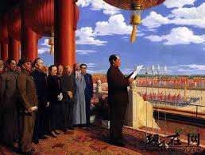

1949/10/1
1949年10月1日，北京30万群众齐集天安门广场，隆重举行开国大典。 毛泽东在天安门城楼上向全世界庄严宣告：中华人民共和国中央人民政府今天成立了。 中华人民共和国成立后，中国共产党成为全国范围的执政党。
2018/5/12
 我养了一只白色的狗
我养了一只白色的狗
2019/4/6
 后来他晒黑了
后来他晒黑了
1979 July 9
Voyager 2 makes its closest approach to Jupiter
1980 Nov. 12
Voyager 1 flies by Saturn, Voyager 1 begins its trip out of the Solar System
1981 Aug. 25
Voyager 2 flies by Saturn
1982
Deep Space Network upgrades two 26-m antennas to 34-m
1986 Jan. 24
Voyager 2 has the first-ever encounter with Uranus, Deep Space Network begins expansion of 64-m antennas to 70-m
1987
Voyager 2 'observes' Supernova 1987A
1988
Voyager 2 returns first color images of Neptune
1989 Aug. 25
Voyager 2 is the first spacecraft to observe Neptune, Voyager 2 begins its trip out of the Solar System, below the ecliptic plane
1990 Jan. 1
Begins Voyager Interstellar Mission
1990 Feb. 14
Last Voyager Images - Portrait of the Solar System
1998 Feb. 17
Voyager 1 passes Pioneer 10 to become the most distant human-made object in space
2004 Dec. 15
Voyager 1 crosses Termination Shock
2007 Sep. 5
Voyager 2 crosses Termination Shock
2012 Aug. 25
Voyager 1 enters Interstellar Space